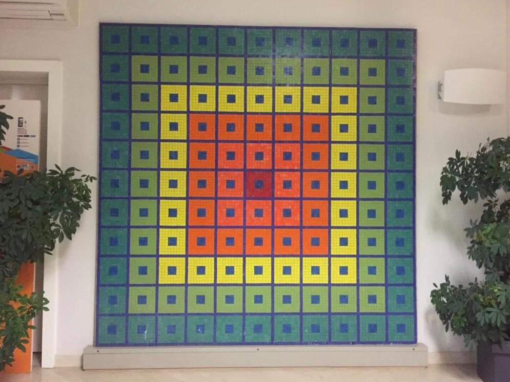

Il Museo Umbro Apollonio fu fondato nel 1981 con deliberazione del Consiglio Comunale di San Martino di Lupari. La nascita del Museo fu solo l'atto conclusivo di una serie di iniziative atte a divulgare l'arte contemporanea che presero il via dalla Biennale d'arte contemporanea promossa dal circolo APL di San Martino di Lupari e, in particolare, da Edoer Agostini, artista ed operatore culturale al cui fervore e alla cui capacità organizzativa si deve in primo luogo l'esistenza di questa realtà museale. Il gruppo APL era costituito da collezionisti del luogo che stimolarono l'amministrazione locale alla realizzazione di biennali d'arte contemporanea che si susseguirono dal 1971 al 1994 e che ebbero risonanza in campo nazionale meritando il plauso di personalità del calibro di Giulio Carlo Argan e Bruno Munari. Il Museo è ispirato principalmente alla corrente artistica del Neo–Costruttivismo e, per tale motivo, struttura unica in Italia annoverando oltre centocinquanta opere di artisti italiani e stranieri di fama internazionale. È dedicato a Umbro Apollonio, una delle figure più prestigiose nel campo della critica dell'arte contemporanea, che aveva legato il suo nome all'approfondimento delle poetiche di questa tendenza artistica e che le aveva divulgate e sostenute, sia nella sua attività di docente universitario, sia in quella di critico e direttore della Biennale di Venezia. All’interno del Museo sono conservate opere di: Marina Apollonio, Antonio Asis, Alberto Biasi, Agostino Bonalumi, Ennio Chiggio, Hugo Demarco, Lia Drei, Colette Dupriez, Nato Frascà, Ferruccio Gard, H. Jorg Glattfelder, Franco Grignani, Edoardo Landi, Julio Le Parc, Estuardo Maldonado, Attilio Marcolli, Manfredo Massironi, Giuseppe Minoretti, Marcello Morandini, François Morellet, François Morisson, Bruno Munari, Pompeo Pianezzola, Salvador Presta, Piero Risari, H. Garçia Rossi, Paolo Scirpa, Aldo Schmidt, Victor Simonetti, Françisco Sobrino, Grazia Varisco, Shizuko Yoshikawa, Jean-Pierre Yvaral, Gaetano Kanizsa. Fonte: Ministero della Cultura italiano.
